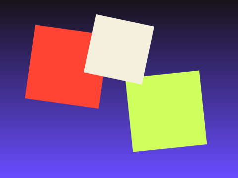

Mobile App UI →

End-to-end UI for a habit-tracking app, from wireframes through a shipped design system.
Designed and built the interface for a habit-tracking app from the first low-fidelity wireframes through to a shipped, animated design system — covering onboarding, daily check-ins, and streak tracking.
End-to-end product design and SwiftUI implementation. Prototyped in Figma, animated key moments with Lottie.